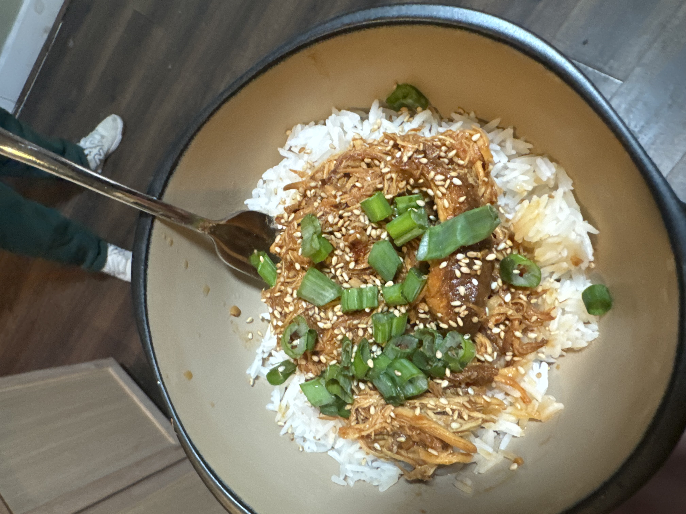

Home
Honey Garlic Chicken

This recipe is so easy to make in a slow cooker.
Ingredients:
- Honey
- Garlic
- Chicken
- Soy sauce
- Chili paste
- Tomato paste
Steps:
- Mix together soy sauce, honey, garlic, chili paste, and tomato paste
- Add chicken to slow cooker
- Pour sauce over chicken, making sure chicken is submerged in sauce
- Set slow cooker on low for 5-6 hours, or high for 3-4 hours
- When finished cooking, serve with rice and vegetables and enjoy